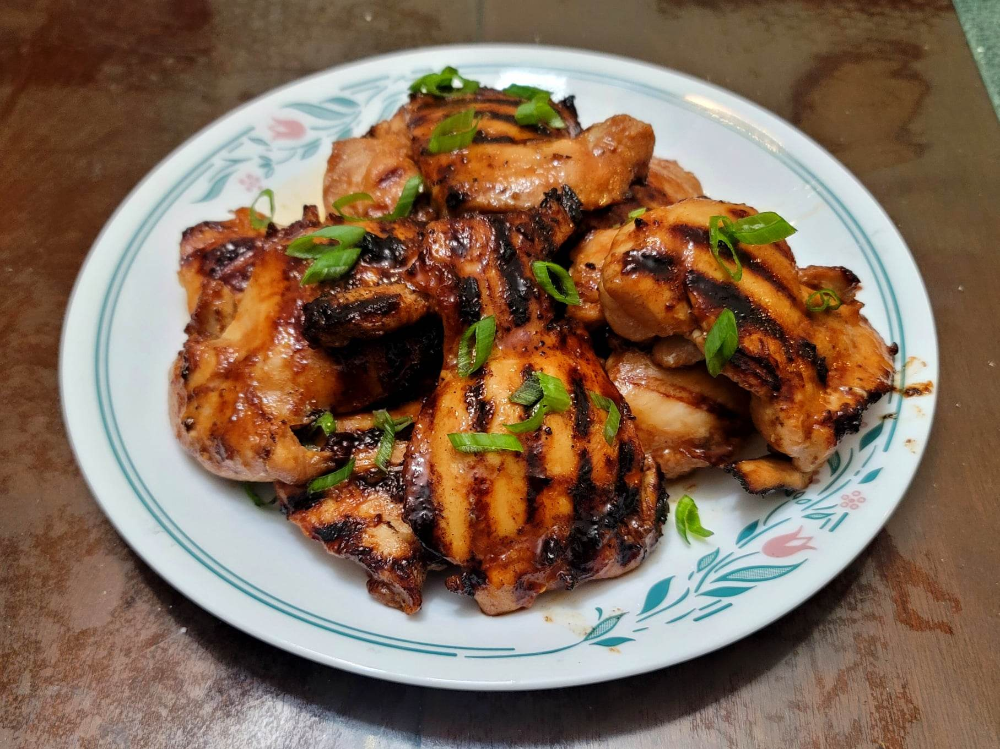

Huli Huli Chicken

Ingredients:
- 4 lb Chicken thighs, boneless and skinless
- 1 cup Pineapple juice
- 1/2 cup Soy sauce
- 1/2 cup Brown sugar
- 1/3 cup Ketchup
- 1/4 cup Chicken broth
- 2 tsp Ginger, grated
- 1/2 tbsp Garlic, grated
- Optional: Scallions, thinly sliced for garnish
Instructions:
- Combine all the ingredients except for the chicken and scallions. Reserve one cup of the mixture and store until ready. Combine the rest of mixture with the chicken and let marinate overnight.
- Grill each chicken thigh for about 6-8 minutes per side, basting occasionally with the reserved sauce during the last 5 minutes.
- Serve hot, garnished with scallions.